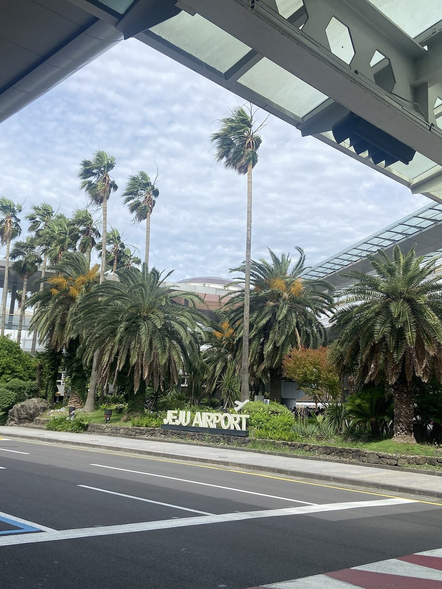
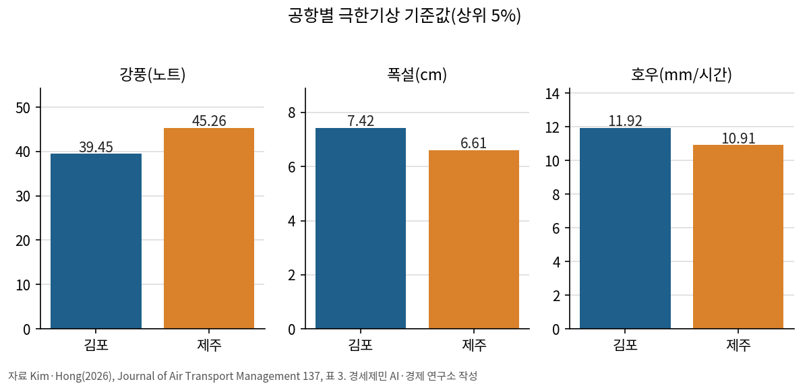
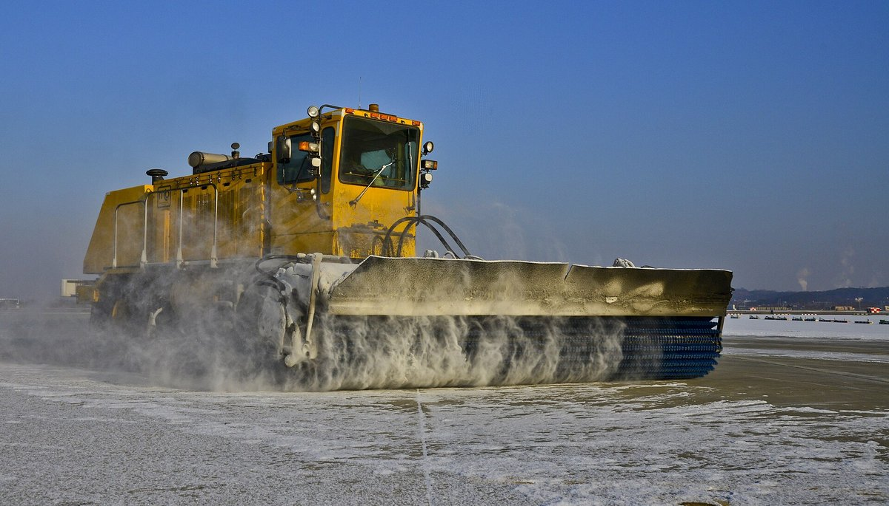
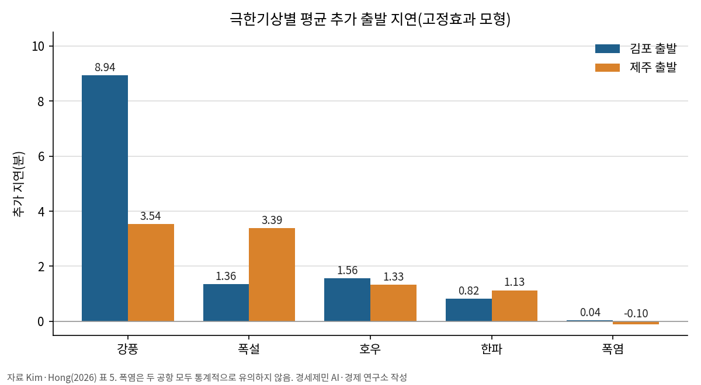
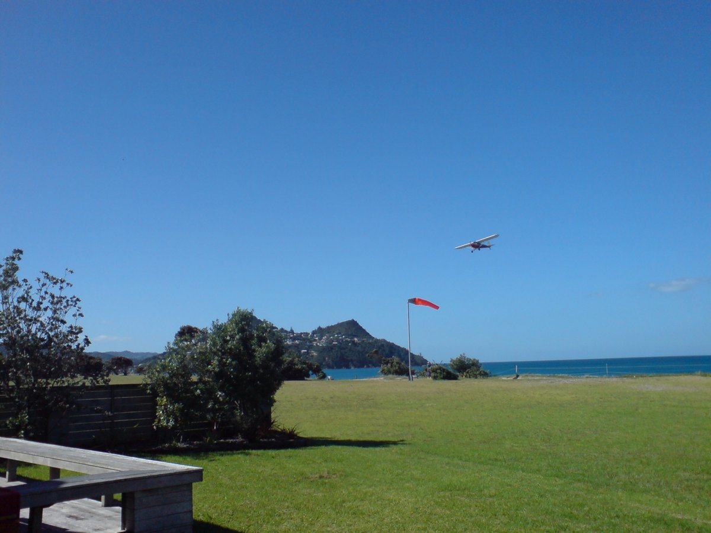
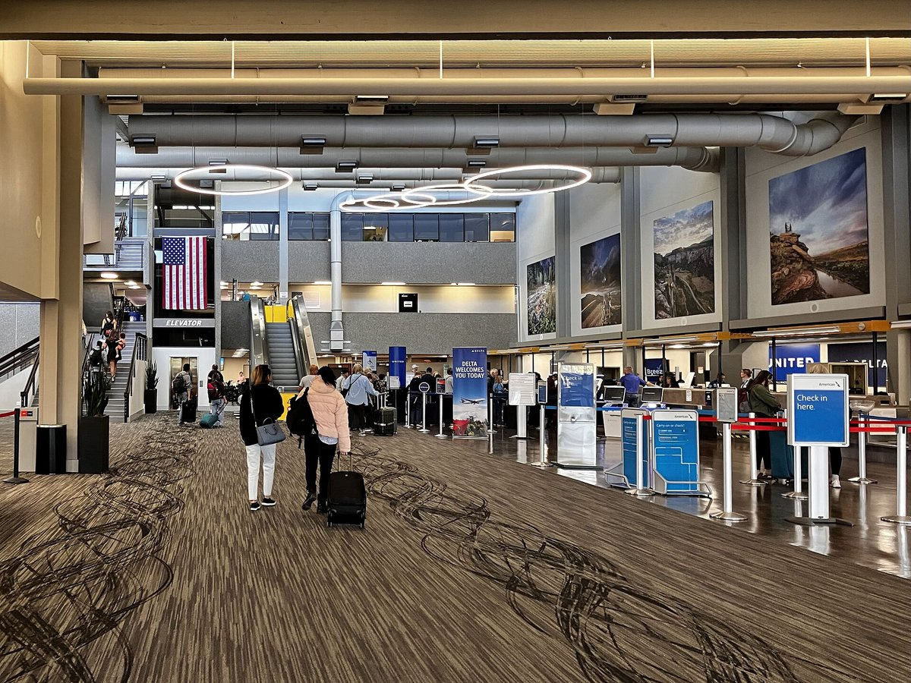
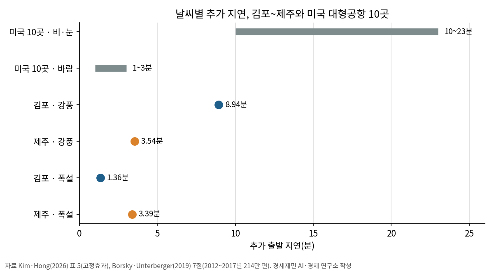
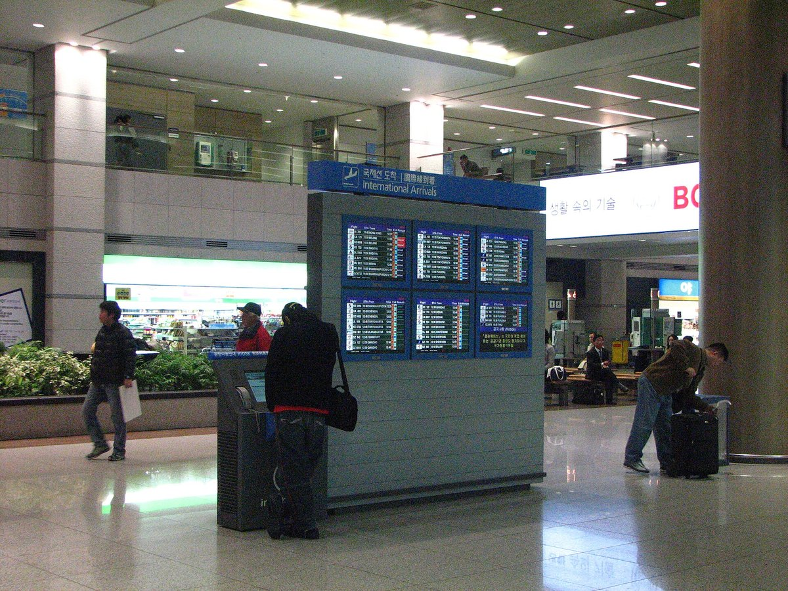
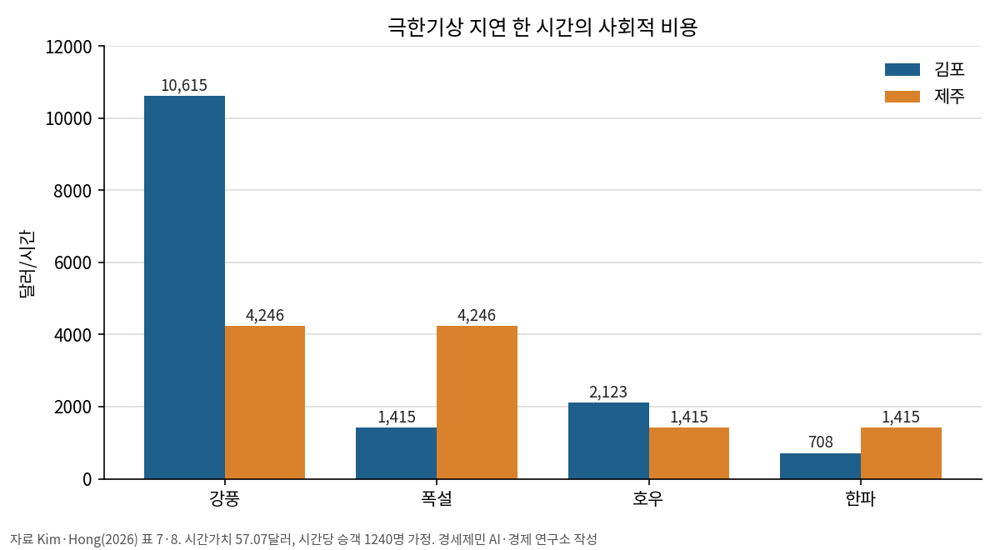
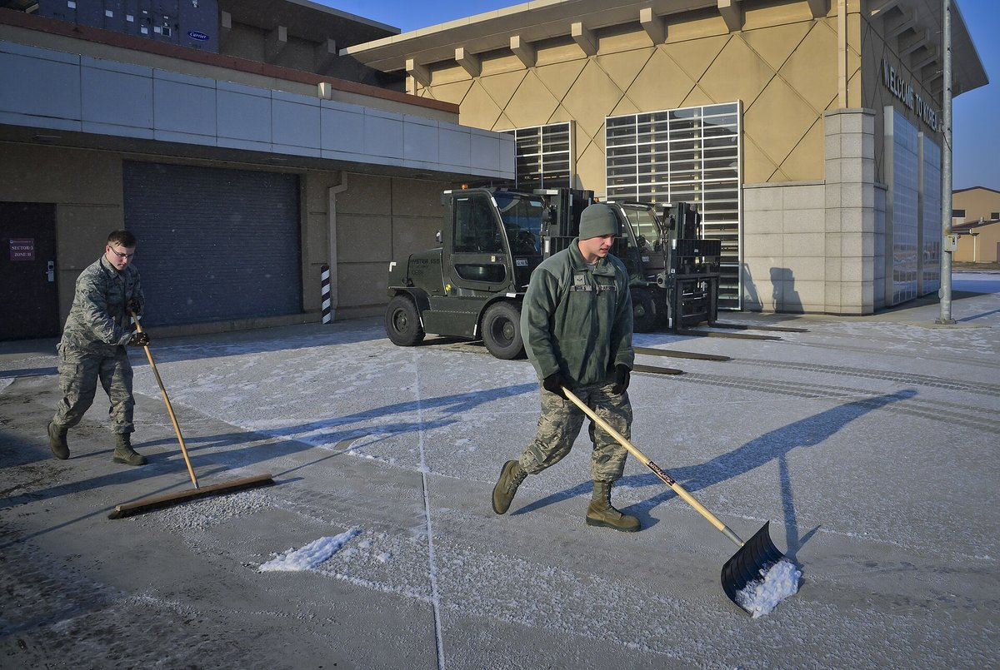

[항공] 같은 강풍에 김포 9분·제주 4분…공항 장비가 지연 갈랐다
김포~제주 16년 운항 분석, 강풍은 김포·폭설은 제주에서 더 늦어
미국 대형공항은 비·눈이 최대 23분…폭염은 두 연구 모두 무효과
AI경제저널=김갑봉 기자 | 겨울철 제주행 비행기가 늦어지면 승객은 먼저 날씨를 탓한다. 그런데 같은 날씨라도 공항마다 늦어지는 시간이 다르다는 연구가 나왔다. 차이를 가른 것은 공항의 대비 장비였다.
국제 학술지에 실린 연구 다섯 편을 나란히 놓았다. 날씨가 비행기를 늦춘다는 데는 모두 같다. 어떤 날씨가 얼마나 늦추는지는 공항마다, 나라마다 다르다.
세계에서 가장 붐비는 국내선

김포~제주는 2017년부터 세계에서 가장 붐비는 국내선 노선이다. 거리는 약 449km, 비행시간은 1시간 남짓이다. 2018년 제주공항에서는 한 해 7만9640편이 뜨고 내렸다. 8분에 한 편꼴이다.
서울대 환경대학원 김선호·홍종호 연구진은 2007년 1월부터 2023년 5월까지 이 노선의 출발 기록 130만 건을 분석했다. 논문은 국제 학술지 『항공운송관리저널』 11월호(137권)에 실렸다.
연구진이 이 노선을 고른 까닭은 셋이다. 중간 기착 없이 두 공항만 오가 지연을 두 공항 날씨로 곧장 돌릴 수 있다. 운항이 공항 용량에 가까워 작은 날씨 충격도 지연으로 드러난다. 갈아탈 교통수단도 마땅치 않다.
국토교통부가 10월 25일부터 적용한 2026년 동계 운항 일정에서 국내선은 20개 노선, 최대 주 1735회다. 20개 노선 가운데 13개가 제주 노선이다.
강풍은 김포, 폭설은 제주

연구진은 공항마다 날씨 값의 상위 5%를 극한기상으로 잡았다. 강풍은 김포 39.45노트, 제주 45.26노트다. 폭설은 김포 7.42cm, 제주 6.61cm다.
지연은 예정 출발보다 1분만 늦어도 셌다. 국토교통부 통계는 30분을 넘어야 지연으로 본다고 연구진은 적었다. 평균 출발 지연은 김포 21.1분, 제주 23.6분이다.

연구진은 같은 편명끼리 견주는 고정효과 모형을 최종 결과로 골랐다. 편마다 원래 잘 늦는 성향을 걸러 내기 위해서다. 모형이 자료에 맞는 정도를 재는 정보기준(AIC·BIC)도 이 모형이 더 낫다.
김포에서는 강풍이 출발을 평균 8.94분 늦췄다. 호우 1.56분, 폭설 1.36분, 한파 0.82분이 뒤를 이었다. 제주에서는 강풍 3.54분, 폭설 3.39분, 호우 1.33분, 한파 1.13분이었다.

폭염은 두 공항 모두 통계적으로 의미가 없다. 편별 특성을 걸러 내지 않은 모형에서는 김포 강풍 지연이 64.81분까지 커진다. 연구진은 이 값이 날씨 영향을 부풀린다고 봤다.
태풍처럼 비와 바람이 함께 몰아칠 때는 김포에서만 지연이 더 커졌다. 저비용항공사 편은 두 공항 모두 대형항공사보다 더 늦다. 여유 항공기가 적어 한 번 생긴 지연이 다음 편으로 번지기 쉽다는 설명이다.
바람 센 제주가 덜 늦은 까닭

바람은 제주가 더 센데 강풍 지연은 김포가 길다. 반올림하면 9분 대 4분이다. 연구진은 장비 차이를 짚었다. 제주공항은 2001년부터 원격 센서 11개로 저층 급변풍 경보장비(LLWAS)를 돌렸다.
논문은 김포에 이 장비가 없었다고 적었고, 근거로 2009년 기상연구소 연구를 들었다. 항공기상청이 올해 9월 공공데이터포털에 낸 LLWAS 경보·센터필드 자료에는 김포공항이 들어 있다. 연구 자료는 2023년 5월에서 끝난다.
눈은 거꾸로다. 김포는 제설 장비를 제주보다 많이 갖췄고, 폭설 지연은 김포 1분, 제주 3분이다. 같은 날씨라도 공항의 대비가 지연 시간을 갈랐다는 게 연구진의 해석이다.
활주로 방향도 변수다. 김포 활주로는 북서~남동, 제주는 동~서로 놓였다. 연구진은 두 공항 모두 우세풍이 활주로를 비스듬히 가로질러 측풍에 약하다고 짚었다.
같은 두 공항의 2019년 지상 활주시간을 분석한 Park·Kim(2023) 연구도 풍향과 강수를 유의한 요인으로 냈다. 제주의 활주시간이 김포보다 길다.
미국 대형공항 10곳은 비·눈이 더 컸다

미국 대형공항 10곳의 출발 214만 편을 분석한 보르스키·운터베르거(2019)는 결과가 달랐다. 비와 눈은 강도에 따라 출발을 10~23분 늦췄다. 바람은 1~3분에 그쳤고, 영하 기온은 약 2분이었다.

바람과 비의 크기가 두 연구에서 뒤집힌 셈이다. 폭염이 지연을 늘리지 않는다는 결과는 같다. 미국 연구진은 바람이 비보다 23배 자주 불어 누적 영향은 클 수 있다고 덧붙였다.
미국 연구진은 승객이 지연 1분을 약 1.5달러로 여긴다는 선행 연구를 들어 비용도 따졌다. 2017년 기상 지연이 모두 비·눈 때문이었다고 보면 비용은 6억7000만~15억4000만 달러다.
시간당 1만 달러, 공항별 기준이 필요하다

연구진은 승객의 시간가치를 시간당 57.07달러로 잡았다. 업무 승객 10%, 여가 승객 90%로 나눈 값이다. 시간당 승객 1240명을 곱하면 김포 강풍 한 시간의 사회적 비용은 1만615달러다. 제주는 폭설과 강풍이 각각 4246달러다.

비용을 재는 길은 하나가 아니다. 레스구르그·말라볼티(2023)는 유럽 국내선 수익관리 자료로 출발편 승객, 짧게 머무는 승객, 첨두시간 승객의 지연 비용이 더 크다고 밝혔다. 같은 시간가치를 모두에게 매기면 실제 비용과 어긋날 수 있다.
논문이 정리한 항공기상 특보 기준은 최대풍속 35노트, 적설 3cm, 3시간 강수 50mm다. 연구진은 모든 공항에 한 가지로 적용하는 기준 대신 공항별 기준을 세우라고 제안했다. 제설과 기상관측 투자의 편익 근거로 이 비용을 쓰라고도 했다.

보스카키 외(2023)는 공항 기반시설이 과거 기후 기준으로 설계돼 기후변화에 더 취약해진다고 정리했다. 결항으로 번진 경우는 김포~제주 연구에 들어 있지 않다. 연구진도 장시간 지연과 결항을 함께 다루는 후속 연구가 필요하다고 적었다.
참고문헌
- Kim, S. H., Hong, J. H. (2026). Flight delays and social costs from extreme weather on the Gimpo-Jeju air route of South Korea. Journal of Air Transport Management, 137, 103080. https://doi.org/10.1016/j.jairtraman.2026.103080
- Borsky, S., Unterberger, C. (2019). Bad weather and flight delays: The impact of sudden and slow onset weather events. Economics of Transportation, 18, 10-26. https://doi.org/10.1016/j.ecotra.2019.02.002
- Lesgourgues, A., Malavolti, E. (2023). Social cost of airline delays: Assessment by the use of revenue management data. Transportation Research Part A: Policy and Practice, 170, 103613. https://doi.org/10.1016/j.tra.2023.103613
- Park, D. K., Kim, J. K. (2023). Influential factors to aircraft taxi time in airport. Journal of Air Transport Management, 106, 102321. https://doi.org/10.1016/j.jairtraman.2022.102321
- Voskaki, A., Budd, T., Mason, K. (2023). The impact of climate hazards to airport systems: a synthesis of the implications and risk mitigation trends. Transport Reviews, 43(4), 652-675. https://doi.org/10.1080/01441647.2022.2163319
- 국토교통부 국제항공과(2026.10.25). 「’26년 동계 정기 항공편 일정 확정」. https://eiec.kdi.re.kr/policy/materialView.do?num=288494
- 기상청 항공기상청(2026.9.29). 「기상청 항공기상청_LLWAS 경보」·「LLWAS 센터필드정보」, 공공데이터포털. https://www.data.go.kr/biz/dcat/metadata/15150323.do https://www.data.go.kr/biz/dcat/metadata/15150325.do
[사진 출처]
- [사진1] Jeong seolah, 「Jeju airport.jpg」, 위키미디어 공용, CC0, 2022.6.27.
- [사진2] Tech. Sgt. Travis Edwards(미 공군), 「Winter time at Osan AB -- They see me rollin' 160113-F-LU738-148.jpg」, 위키미디어 공용, 퍼블릭 도메인(미 연방정부 저작물), 2016.1.13.
- [사진3] Ingolfson, 「Pauanui Airfield Right Within The Village 02.jpg」, 위키미디어 공용, 퍼블릭 도메인, 2011.1.
- [사진4] Designism, 「Grand Junction Regional Airport check-in counter.jpg」, 위키미디어 공용, CC0, 2025.5.8.
- [사진5] Rintojiang, 「Incheon Airport-1.JPG」, 위키미디어 공용, 퍼블릭 도메인, 2007.11.26.
- [사진6] Tech. Sgt. Travis Edwards(미 공군), 「Winter time at Osan AB -- Clearing first snowfall of the year 160113-F-LU738-076.jpg」, 위키미디어 공용, 퍼블릭 도메인(미 연방정부 저작물), 2016.1.13.
관련기사
- [글로벌 인천공항⑰] 인천공항 배당 3194억원, 2011년 매각대금 상임위 삭감
- 델타항공, 태평양 노선 기내 와이파이 무료…'플라이 델타' 앱 국내 서비스 재개
- 에어프레미아, 좌석 18석 줄여 이코노미 앞뒤 간격 33인치로
- 서산에 UAM 핵심부품 시험평가센터 완공…2027년부터 기업 지원
저작권자 © AI경제저널 무단전재 및 재배포, AI학습 및 활용 금지